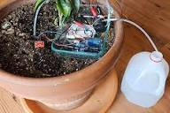
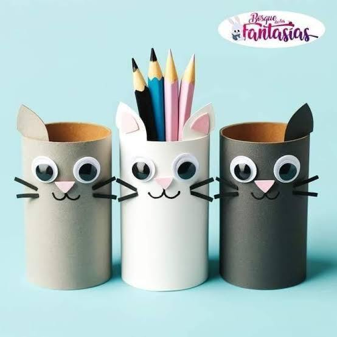
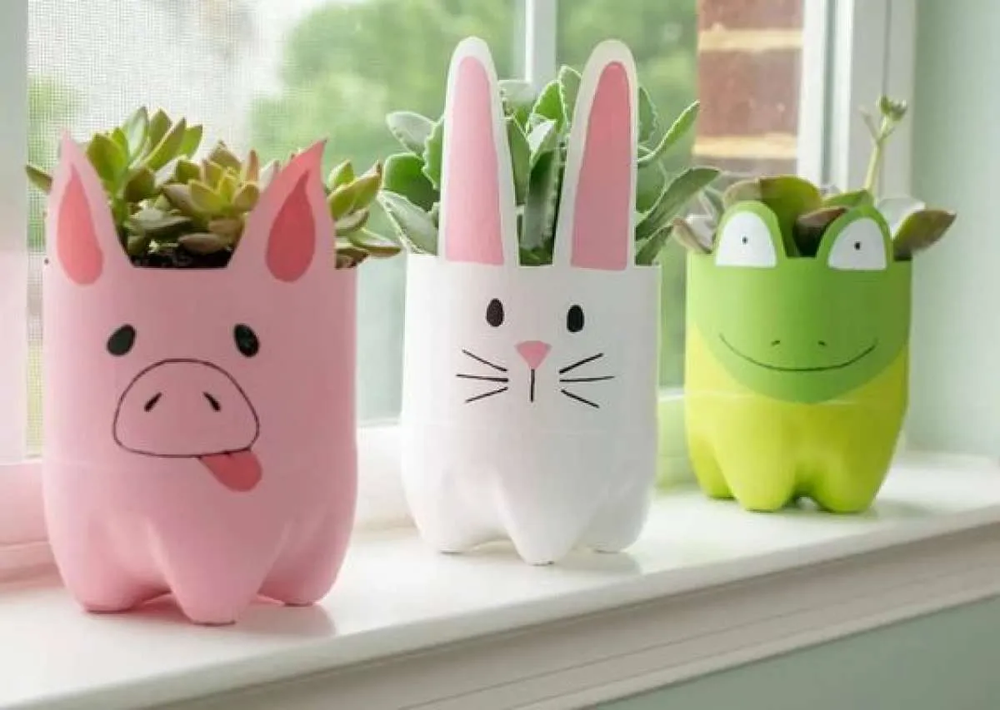
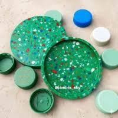
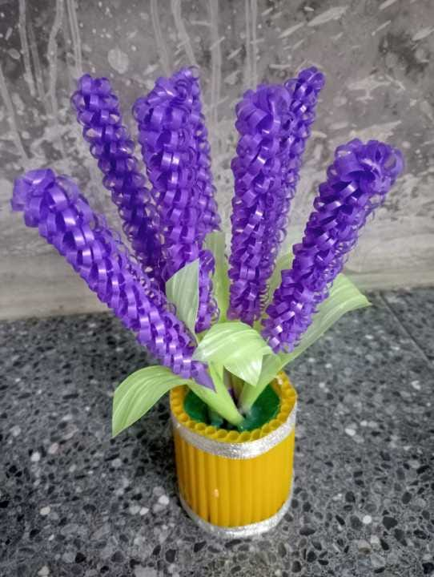
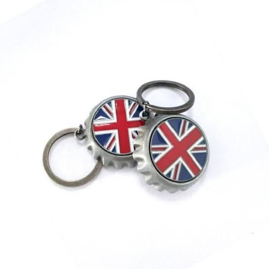
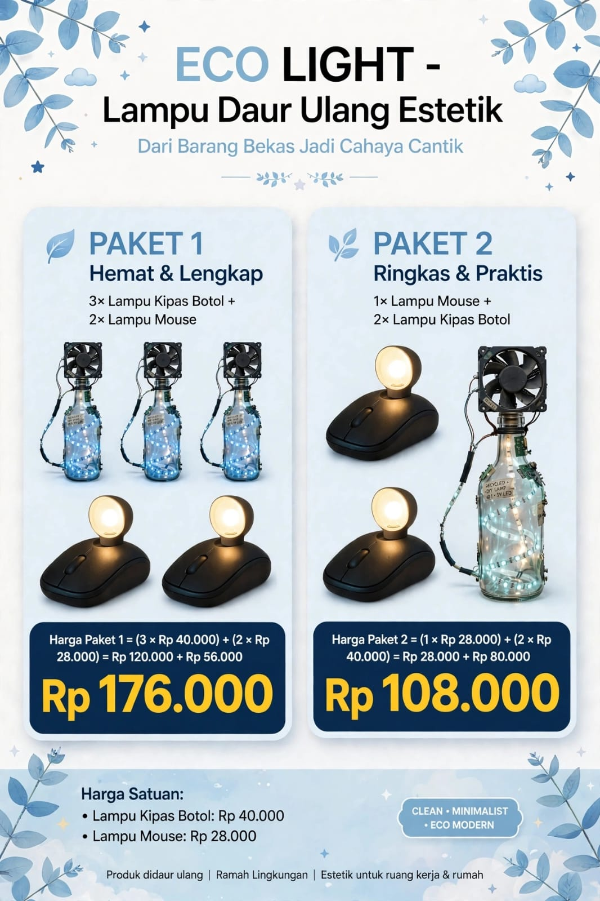
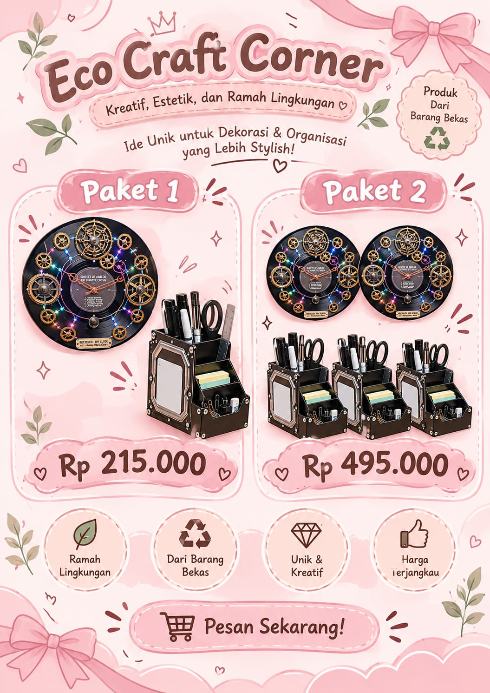
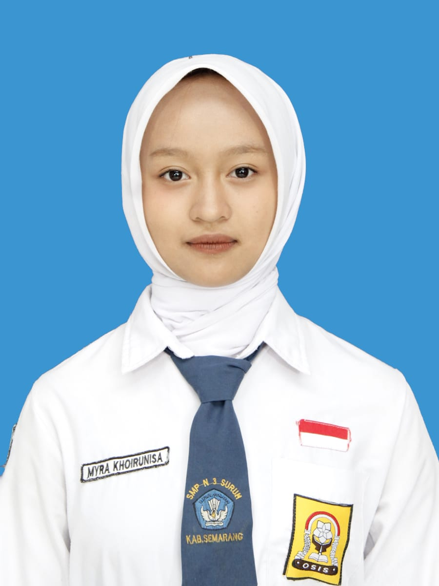
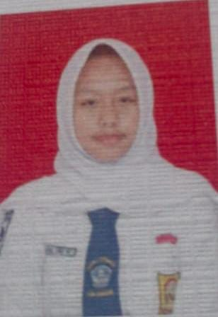

IKLAN 1
IKLAN 1
PEKERJAAN 1 • NO. 24
Muhammad Risqan Nuridho (24)
Fan Cooler HP & Lampu Tidur Otomatis
Mengubah barang bekas menjadi karya yang bermanfaat melalui prinsip 3R (Reduce, Reuse, Recycle) dan memiliki nilai guna. Melalui kreativitas, kita dapat menjaga lingkungan sekaligus menciptakan sesuatu yang lebih berharga.
Kreativitas, kepedulian, dan aksi nyata untuk lingkungan.
Mengolah sampah dengan benar, dapat menciptakan karya yang cemerlang.
Mengurangi penggunaan barang sekali pakai seperti botol plastik dan kantong kresek agar sampah tidak menumpuk sejak awal.
Memanfaatkan kembali barang bekas yang masih layak. Contohnya botol bekas yang kita ubah menjadi alat penyiram tanaman otomatis.
Mengolah sampah menjadi produk baru yang lebih berguna dan memiliki nilai jual, sehingga tidak berakhir di tempat sampah.
Setiap hari, lingkungan kita dipenuhi oleh sampah botol plastik, galon bekas, dan wadah minuman yang dibuang begitu saja. Sampah-sampah ini sulit terurai, membutuhkan waktu ratusan tahun untuk hancur, dan akhirnya mencemari tanah, air, serta merusak keindahan lingkungan sekolah dan rumah kita.
Di sisi lain, banyak tanaman di rumah dan sekolah yang sering layu bahkan mati hanya karena lupa disiram. Air yang digunakan untuk menyiram pun sering terbuang sia-sia karena tidak terkontrol.
Karena itu, kami menciptakan solusi dari dua masalah ini: mengubah barang bekas yang tidak terpakai menjadi barang yang lebih berguna dan bernilai jual. dengan memanfaatkan sampah yang awalnya dianggap tidak berguna, kita dapat mengubahnya menjadi barang yang lebih bermanfaat, sekaligus mengurangi tumpukan sampah di lingkungan kita.
Produk daur ulang jadi cemerlang

Alat berbasis sensor yang menyiram secara otomatis saat tanah kering dan berhenti saat tanah sudah cukup basah.

Wadah penyimpanan berbentuk tabung dari gulungan tisu bekas untuk menyimpan alat tulis.

Media tanam yang dibuat dari potongan sampah botol plastik.

Tatakan datar tahan air yang dibuat dari susunan atau lelehan tutup botol plastik bekas.

Kerajinan tangan berbentuk bunga lavender dari sampah sedotan untuk pajangan / hiasan.

Aksesoris gantungan kunci yang memanfaatkan tutup botol logam bekas.
Modal Pembuatan :
Harga Jual :
Laba :
Mendesain iklan bundling produk daur ulang kolaboratif Matematika.
IKLAN 1
Fan Cooler HP & Lampu Tidur Otomatis

IKLAN 2Lampu Kipas & Lampu Mouse

IKLAN 3Jam Dinding & Desk Organizer
Menulis teks laporan hasil observasi secara logis dan sistematis.
Writing a procedure text / report text logically and systematically.
X PPLG 1 (24)
muhamad risqan

X PPLG 1 (27)
@myr.khrnsa

X PPLG 1 (34)
@ulndrwwik
Hubungi kami jika ada kritik, saran, dan pesan
Alamat:
Jl. Darun Na'im, Karangduren, Kec. Tengaran,
Kabupaten Semarang, Jawa Tengah 50775
Email:
wiwik.p26140@satamail.my.idWhatsApp:
0877-6642-7163